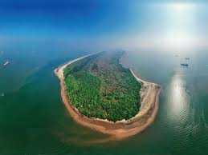

Hope Island
Hope Island is a small island located off the coast of Kakinada. It is a natural barrier that protects the city from the rough seas and cyclones. The island is a popular tourist spot, offering picturesque views and opportunities for boat rides and nature walks.
Location: Off the coast of Kakinada, Andhra Pradesh, India
Activities: Boat rides, nature walks, photography, sightseeing
Transportation: Accessible by boat from Kakinada port.